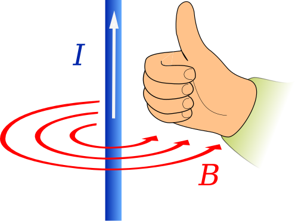
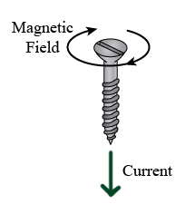
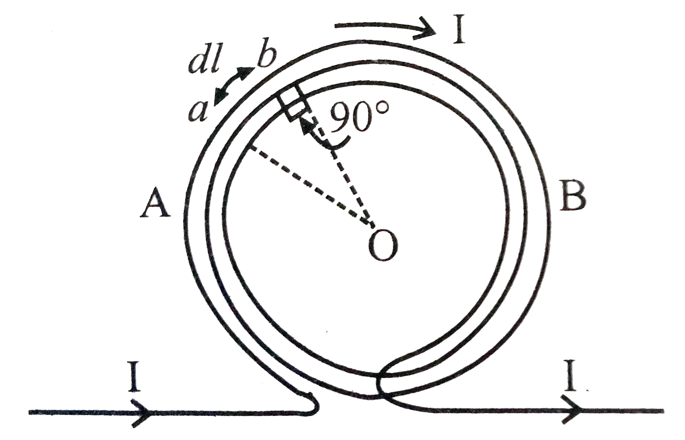
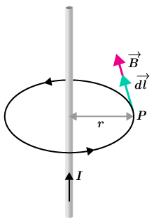
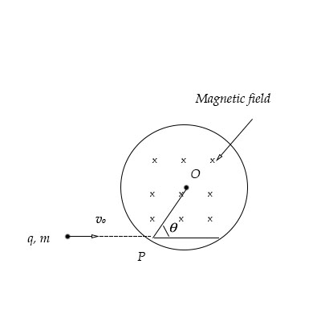
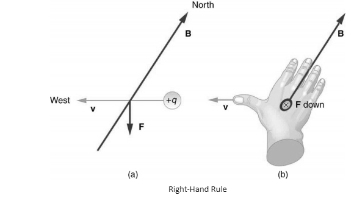
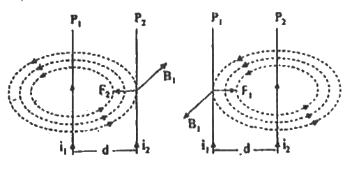
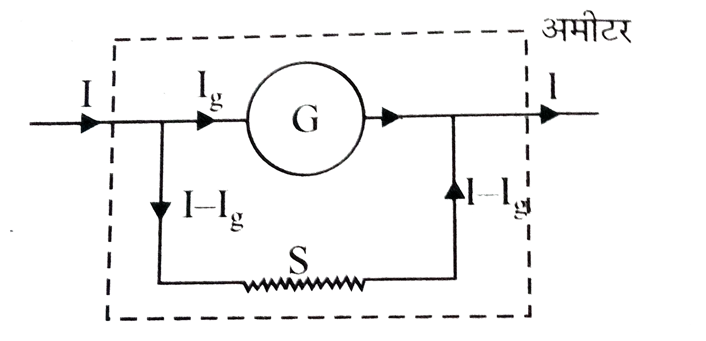
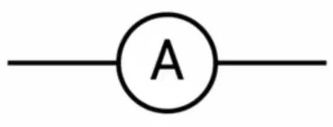
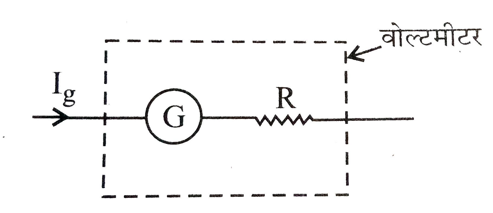

Question: What is meant by the magnetic effect of current?
When an electric current is passed through a conductor, a magnetic field is produced around it. This phenomenon is called the magnetic effect of current.
Question: Describe Oersted's experiment to demonstrate the magnetic effect of current, and state its conclusions.
To explain the magnetic effect of current, Oersted performed an experiment in 1820.
Oersted's Experiment
In his experiment, Oersted took a compass needle and placed a straight conducting wire near it, parallel to the compass needle. This conducting wire was connected to a cell and a plug key.
Observations of the experiment —
1. Initially, when no current flows in the conducting wire, there is no change in the position of the compass needle.
2. As soon as current is passed through the conducting wire by pressing the plug key, the compass needle gets deflected.
3. On reversing the direction of current in the conducting wire, the deflection of the compass needle also reverses direction.
4. On increasing the value of current flowing through the conducting wire, or bringing the compass needle closer to the wire, the deflection of the needle increases.
Conclusion
From the above experiment, it is concluded that whenever an electric current is passed through any conducting wire, a magnetic field is produced around it.
Question: What fields are produced due to a stationary charge, a moving charge, and a current-carrying conductor?
Answer —
1. A stationary charge produces an electric field.
2. A moving charge produces both an electric field and a magnetic field.
3. A current-carrying conductor produces a magnetic field around the conductor.
Question- State the Biot–Savart law and define the unit of current. (2014/16/26)
Biot–Savart Law —
According to the Biot–Savart law, the magnetic field produced at a point due to a small current element \(dl\) of a current-carrying conductor—
1. is proportional to the current \(I\). That is,
$$
dB \propto I
$$
2. is proportional to the length \(dl\) of the current element. That is,
$$
dB \propto dl
$$
3. is proportional to \(\sin\theta\), where \(\theta\) is the angle between the current element and the line joining it to that point. That is,
$$
dB \propto \sin\theta
$$
4. is inversely proportional to the square of the distance \(r\) between the current element and the line joining it to that point. That is,
$$
dB \propto \frac{1}{r^2}
$$
On combining the above laws —
$$
dB \propto \frac{I\,dl\,\sin\theta}{r^2}
$$
$$
dB = \frac{\mu_0}{4\pi}\frac{I\,dl\,\sin\theta}{r^2}
$$
where \(\mu_0\) is the permeability of free space.
Q. What are the different rules used to determine the direction of the magnetic field produced at a point due to a current-carrying conductor?
The direction of the magnetic field produced by a current-carrying conductor
can be determined by the following rules:
1. Right-Hand Thumb Rule:
If a straight current-carrying conductor is held in the right hand such that
the thumb points in the direction of current, then the curled fingers indicate
the direction of the magnetic field around the conductor.

2. Ampere's Swimming Rule:
Imagine a person swimming in the direction of current with their face
towards the point where the direction of the magnetic field is to be determined.
Then, the direction of the magnetic field is from the person's left hand
towards the right hand.
3. Maxwell's Corkscrew Rule:
If a right-handed corkscrew is rotated in such a way that it advances
in the direction of current, then the direction of rotation of the
corkscrew indicates the direction of the magnetic field at that point.

Question: Derive the formula for the intensity of the magnetic field at the center of a current-carrying circular coil.

Let the radius of a circular coil be \(r\), the current flowing in the coil be \(I\), and the number of turns in the coil be \(n\). To find the magnetic field at the center \(O\) of this circular coil, the circumference of the coil is divided into a large number of equal small elements. Let one such element be \(AB\), whose length is \(dl\).
According to the Biot–Savart law, the magnetic field produced at the center of the coil due to this element is
$$
dB=\frac{\mu_0}{4\pi}\frac{I\,dl\,\sin90^\theta}{r^2}
$$
$$
dB=\frac{\mu_0}{4\pi}\frac{I\,dl}{r^2}
$$
The magnetic field produced at the center due to the entire coil is
$$
B=\int dB
$$
$$
B= \int\frac{\mu_0}{4\pi}\frac{I\,dl}{r^2}
$$
$$
B=\frac{\mu_0 I}{4\pi r^2}\int dl
$$
$$
B=\frac{\mu_0 I}{4\pi r^2}(2\pi rn)
\quad
\left(\because\ \int dl=2\pi rn\right)
$$
$$
B=\frac{\mu_0 I}{4\pi r^2}(2\pi rn)
$$
$$
B=\frac{\mu_0 nI}{2r}
$$
This is the formula for the intensity of the magnetic field at the center of a current-carrying circular coil.
Question: How can the intensity of the magnetic field at the center of a circular coil be increased?
The formula for the intensity of the magnetic field at the center of a circular coil is—
$$
B=\frac{\mu_0 nI}{2r}
$$
where—
\(B\) = intensity of the magnetic field
\(\mu_0\) = magnetic permeability of free space
\(n\) = number of turns of the coil
\(I\) = current flowing in the coil
\(r\) = radius of the coil
Hence, the intensity of the magnetic field at the center of the coil can be increased in the following ways—
By increasing the value of the current \(I\) flowing in the coil.
By increasing the number of turns \(n\) of the coil.
By decreasing the radius \(r\) of the coil.
Question: Derive an expression for the force acting between two parallel current-carrying conductors. Under what conditions will this force be attractive, and under what conditions will it be repulsive?
Let two long, straight and parallel conductors \(A\) and \(B\) be situated at a distance \(r\) from each other. Currents \(I_1\) and \(I_2\) respectively are flowing through them.
The magnetic field produced at the position of conductor \(B\) due to conductor \(A\),
\[
B=\frac{\mu_0 I_1}{2\pi r}
\]
If the length of conductor \(B\) is \(l\), then the magnetic force acting on it,
If the currents in both the conductors flow in the same direction, then an attractive force acts between them.
If the currents in both the conductors flow in opposite directions, then a repulsive force acts between them.
Conclusion:
The force acting between two parallel current-carrying conductors is proportional to the product of the currents and inversely proportional to the distance between them.
Question: State Ampere's circuital law and prove it. (2026)
According to this law, the line integral of the intensity of the magnetic field \((\vec{B})\) around any closed circuit is equal to \(\mu_0\) times the total current enclosed by that circuit.
\[
\oint \vec{B}\cdot d\vec{l}=\mu_0 I
\]
where,
\(\vec{B}\) = intensity of the magnetic field
\(d\vec{l}\) = small length element of the circuit
\(\mu_0\) = magnetic permeability of free space
\(I\) = total current enclosed by the circuit
Proof:

Let a long straight conductor carry a current \(I\). A circular Amperian loop of radius \(r\) is constructed around the conductor.
The magnetic field at a distance \(r\) from the conductor,
\[
B=\frac{\mu_0 I}{2\pi r}
\]
The circumference of the circle,
\[
\oint dl=2\pi r
\]
The value of \(B\) is the same at every point of the circular loop, and \(\vec{B}\) and \(d\vec{l}\) are in the same direction. Hence,
\[
\oint \vec{B}\cdot d\vec{l}
=\frac{\mu_0 I}{2\pi r}\times 2\pi r
\]
\[
\boxed{\oint \vec{B}\cdot d\vec{l}=\mu_0 I}
\]
This is Ampere's circuital law.
Question: What is meant by Lorentz force?
The force acting on a moving charged particle or on a current-carrying conductor due to a magnetic field is called the Lorentz force.
Question: What is the force acting on a moving charged particle in a magnetic field called? (2021)

The force acting on a moving charged particle in a magnetic field is called the Lorentz force or magnetic force.
Question: Derive the Lorentz force acting on a charge moving in a magnetic field. Also find it in different situations.
When a charged particle moves in a magnetic field, a force acts on it, which is called the Lorentz force.
Let a particle of charge \(Q\) move with velocity \(V\) at an angle \(\theta\) in a magnetic field of intensity \(B\). Then the Lorentz force acting on it depends on the following factors—
The force is proportional to the charge \(Q\).
\[
F\propto Q
\]
The force is proportional to the velocity \(V\).
\[
F\propto V
\]
The force is proportional to the intensity of the magnetic field \(B\).
\[
F\propto B
\]
The force is proportional to \(\sin\theta\), where \(\theta\) is the angle.
\[
F\propto \sin\theta
\]
Combining all the above proportionalities,
\[
F\propto QVB\sin\theta
\]
Taking the value of the proportionality constant as 1,
\[
\boxed{F=QVB\sin\theta}
\]
This is the expression for the Lorentz force acting on a charge moving in a magnetic field.
Special cases:
When the charge moves parallel to the magnetic field \((\theta=0^\circ)\)
\[
F=QVB\sin0^\circ
\]
\[
F=QVB\times0 \]
\[
\boxed{F_{\min}=0}
\]
That is, in this situation, no magnetic force acts on the charge.
When the charge moves perpendicular to the magnetic field \((\theta=90^\circ)\)
\[
F=QVB\sin90^\circ
\]
\[
F=QVB\times1
\]
\[
\boxed{F_{\max}=QVB}
\]
That is, in this situation, the maximum magnetic force acts on the charge.
Question: The speed of a moving charged particle in a magnetic field does not change. Why? (2021)
The speed of a moving charged particle in a magnetic field does not change, because the magnetic (Lorentz) force acting on the charged particle is always perpendicular to the direction of the particle's velocity.
Hence, the magnetic force does no work on the particle. It only changes the direction of motion of the particle, not its speed.
Question: When does a charge move in a circular path in a uniform magnetic field? Derive the formula for the radius of this circular path.
When a charged particle enters a uniform magnetic field with a velocity perpendicular to the direction of the magnetic field, it moves in a circular path.
Derivation of the radius of the circular path:
Let a particle of charge \(Q\) enter a uniform magnetic field of intensity \(B\) with velocity \(V\) perpendicular to the field, and move in a circular path of radius \(r\).
In this situation, the Lorentz force acting on the particle,
\[
F=QVB\sin90^\circ
\]
\[
F=QVB
\]
This force provides the centripetal force necessary for the circular motion of the particle.
\[
F=\frac{mV^2}{r}
\]
Hence,
\[
QVB=\frac{mV^2}{r}
\]
\[
r=\frac{mV^2}{QVB}
\]
\[
\boxed{r=\frac{mV}{QB}}
\]
Question: Calculate the Lorentz force acting on a current-carrying conductor placed in a magnetic field. When will this force be maximum and when will it be minimum?
When a current \(I\) flows through a current-carrying conductor of length \(l\) placed at an angle \(\theta\) in a magnetic field of intensity \(B\), the magnitude of the magnetic (Lorentz) force acting on the conductor depends on the following factors—
The force is proportional to the intensity of the magnetic field \(B\).
\[
F\propto B
\]
The force is proportional to the current \(I\) flowing in the conductor.
\[
F\propto I
\]
The force is proportional to the length \(l\) of the conductor.
\[
F\propto l
\]
The force is proportional to \(\sin\theta\), where \(\theta\) is the angle.
\[
F\propto \sin\theta
\]
Combining all the above proportionalities,
\[
F\propto BIl\sin\theta
\]
Taking the value of the proportionality constant as 1,
\[
\boxed{F=BIl\sin\theta}
\]
This is the expression for the Lorentz force acting on a current-carrying conductor in a magnetic field.
Special cases:
When the conductor is parallel to the magnetic field \((\theta=0^\circ)\)
\[
F=BIl\sin0^\circ
\]
\[
\boxed{F_{\min}=0}
\]
That is, no magnetic force acts on the conductor.
When the conductor is perpendicular to the magnetic field \((\theta=90^\circ)\)
\[
F=BIl\sin90^\circ
\]
\[
\boxed{F_{\max}=BIl}
\]
That is, the maximum magnetic force acts on the conductor.
Question: Which rules are used to determine the direction of the Lorentz force?
The following rules are used to determine the direction of the Lorentz force—
Fleming's Left-Hand Rule: If the forefinger, middle finger, and thumb of the left hand are held mutually perpendicular to each other, then the forefinger indicates the direction of the magnetic field (\(B\)), the middle finger indicates the direction of the current (\(I\)), and the thumb indicates the direction of the force (\(F\)) acting on the conductor.
Right-Hand Palm Rule: If the open palm of the right hand is held such that the magnetic field lines enter the palm and the fingers point in the direction of the velocity (\(V\)) of the particle, then the outstretched thumb indicates the direction of the Lorentz force (\(F\)) acting on the particle.

Q. Derive the expression for the force per unit length between two parallel current-carrying conductors. What will be the nature of the force if—
(i) Current flows in the same direction through both conductors?
(ii) Current flows in opposite directions through both conductors?

Let two long, straight and parallel conductors \(X\) and \(Y\) be placed at a distance \(r\) from each other.
Currents \(I_1\) and \(I_2\) flow through them respectively.
The magnetic field produced at the position of conductor \(Y\) due to conductor \(X\) is,
\[
B_1=\frac{\mu_0 I_1}{2\pi r}
\]
If the length of conductor \(Y\) is \(l\), then the Lorentz force acting on it due to conductor \(X\) is,
If the currents in both conductors flow in the same direction,
the force between them is attractive.
If the currents in both conductors flow in opposite directions,
the force between them is repulsive.
Question: What is a galvanometer?
A galvanometer is an electrical measuring instrument used to detect the presence, direction, and magnitude of very small electric currents flowing in a circuit.
Galvanometers are mainly of two types—
Moving coil galvanometer
Moving magnet galvanometer
Generally, the moving coil galvanometer is used more in laboratories, because it gives more sensitive and accurate results.
Question: Draw a labeled diagram of a moving coil galvanometer and describe its construction.
Construction:
In a moving coil galvanometer, a rectangular coil made of fine insulated copper wire is wound on a light aluminum frame. This coil can rotate freely on two pivots between the pole pieces of a powerful permanent horseshoe magnet (N–S).
A soft iron cylindrical core is placed at the center of the coil, which makes the magnetic field radial and stronger.
Two hair springs are attached at both ends of the coil, which—
Carry electric current to the coil.
Produce a restoring torque when the coil rotates.
These springs are connected to terminal screws \(T_1\) and \(T_2\).
A light aluminum pointer is attached to the coil, which indicates the deflection on a circular scale when the coil rotates. The value of the current is determined from this deflection.
Question: State the principle of a moving coil galvanometer.
Principle:
A moving coil galvanometer works on the principle that when a current-carrying coil is placed in a uniform magnetic field, a torque acts on it, causing the coil to rotate.
If the coil has \(N\) turns, the area of each turn is \(A\), a current \(I\) flows through it, and the intensity of the magnetic field is \(B\), then the deflecting torque acting on the coil
\[
\tau = NBIA
\]
If the torsional constant of the spring is \(C\) and the deflection of the coil is \(\theta\), then the restoring torque
\[
\tau=C\theta
\]
In equilibrium,
\[
NBIA=C\theta
\]
\[
I=\frac{C}{NBA}\theta
\]
\[
\boxed{I\propto\theta}
\]
Hence, the deflection of the coil is proportional to the current flowing through it. Based on this principle, the moving coil galvanometer measures very small electric currents.
Question: What is meant by the sensitivity of a galvanometer?
The deflection produced when a unit current flows through the coil of a galvanometer is called the sensitivity of the galvanometer. It is denoted by \(S\).
If a deflection \(\phi\) is produced on passing a current \(I\), then
\[
\boxed{S=\frac{\phi}{I}}
\]
Question: How is the sensitivity of a galvanometer increased?
The sensitivity of a galvanometer can be increased in the following ways—
By increasing the number of turns \((N)\) in the coil.
By increasing the intensity of the magnetic field \((B)\).
By increasing the area \((A)\) of the coil.
By decreasing the torsional constant \((C)\) of the spring (or suspension wire).
Question: How is a moving coil galvanometer made dead-beat?
To make a moving coil galvanometer dead-beat, the coil is wound on its aluminum frame. When the coil rotates, eddy currents are produced in the frame, which quickly damp out the oscillations. In this way, the galvanometer becomes dead-beat.
Question: Why is a soft iron core placed in the middle of the coil of a galvanometer?
A soft iron core is placed in the middle of the coil of a galvanometer because it concentrates the magnetic lines of force, making the magnetic field stronger and radial. This increases the sensitivity of the galvanometer.
Question: Why are the poles of the magnet made concave in a moving coil galvanometer?
In a moving coil galvanometer, the poles of the magnet are made concave so that a radial magnetic field is obtained between them. This keeps the torque acting on the coil at its maximum, and the deflection remains proportional to the current.
Question: Why is a moving coil galvanometer superior to a tangent galvanometer? Or, state the characteristics of a moving coil galvanometer.
A moving coil galvanometer is superior to a tangent galvanometer for the following reasons—
It is more sensitive.
Very small electric currents can also be measured with it.
Its scale is straight and linear, which makes it easy to read.
The effect of external magnetic fields on it is very small.
Its accuracy is higher.
Question: What is a shunt? Explain the principle of a shunt.
Shunt:
To protect a galvanometer from being damaged by excessive electric current, a wire of low resistance is connected in parallel with its coil, which is called a shunt. It is denoted by \(S\).
Principle of the Shunt:

Let the resistance of the galvanometer be \(G\) and the current required for full-scale deflection be \(I_g\). If a current \(I\) flows in the circuit, then the excess current \((I-I_g)\) will flow through the shunt \(S\).
The potential difference across the galvanometer,
\[
V_g=I_gG
\]
The potential difference across the shunt,
\[
V_s=(I-I_g)S
\]
Since the galvanometer and the shunt are connected in parallel, hence
\[
V_g=V_s
\]
\[
I_gG=(I-I_g)S
\]
\[
I_gG=IS-I_gS
\]
\[
I_gG+I_gS=IS
\]
\[
I_g(G+S)=IS
\]
\[
I_g=\frac{SI}{G+S}
\]
If the \(n\)th part of the main current flows through the galvanometer, that is,
\[
I_g=\frac{I}{n}
\]
\[
\frac{SI}{G+S}=\frac{I}{n}
\]
\[
\frac{S}{G+S}=\frac{1}{n}
\]
\[
nS=G+S
\]
\[
nS-S=G
\]
\[
(n-1)S=G
\]
\[
\boxed{S=\frac{G}{\,n-1\,}}
\]
If the \(n\)th part of the main current is to flow through the galvanometer, then the resistance of the shunt should be the \((n-1)\)th part of the resistance of the galvanometer.
This is the principle of the shunt.
Question: State the uses of a shunt. State its advantages and disadvantages.
Uses of a Shunt:
By connecting a shunt to a galvanometer, it is converted into an ammeter.
A shunt is used to measure electric currents of larger magnitude.
A shunt is used to protect the galvanometer from being damaged by excessive current.
Advantages of a Shunt:
The coil and pointer of the galvanometer are saved from being damaged by excessive current.
The effective resistance of the galvanometer becomes very low, so that connecting it in a circuit does not cause any significant change in the current of the circuit.
The range of the ammeter can be increased with the help of a shunt.
Disadvantage of a Shunt:
Connecting a shunt reduces the sensitivity of the galvanometer.
Question: What is an ammeter?
An ammeter is an electrical measuring instrument used to directly measure, in amperes, the value of current flowing in an electric circuit.

Question: How can a galvanometer be converted into an ammeter?
To convert a galvanometer into an ammeter, a low resistance is connected in parallel with it, which is called a shunt.
Due to the shunt, most of the current flows through the shunt, and only the necessary current passes through the galvanometer. In this way, the galvanometer becomes capable of measuring larger currents and functions as an ammeter.
Question: What is the principle of an ammeter?
Let the resistance of the galvanometer be \(G\) and the current required for full-scale deflection be \(I_g\). If the total current in the circuit is \(I\), then the excess current \((I-I_g)\) will flow through the shunt \(S\).
The potential difference across the galvanometer,
\[
V_g=I_gG
\]
The potential difference across the shunt,
\[
V_s=(I-I_g)S
\]
Since the galvanometer and the shunt are connected in parallel, therefore
\[
I_gG=IS-I_gS
\]
\[
I_gG+I_gS=IS
\]
\[
I_g(G+S)=IS
\]
\[
I_g=\frac{SI}{G+S}
\]
This is the principle of the ammeter.
Question: In which order is an ammeter connected in a circuit, and why?
An ammeter is connected in series in the circuit, so that the entire current flowing in the circuit passes through it. Only then can it measure the correct value of the current.
Question: What should be the resistance of an ammeter, and why?
The resistance of an ammeter should be very low, because it is connected in series in the circuit. If its resistance were high, the total resistance of the circuit would increase and the value of the current would change, making the measurement inaccurate.
Question: What is the resistance of an ideal ammeter?
The resistance of an ideal ammeter is zero.
Question: What will happen if an ammeter is mistakenly connected in parallel in a circuit?
The resistance of an ammeter is very low. If it is mistakenly connected in parallel in the circuit, an extremely large current will flow through it, which may damage (burn out) the ammeter and may create a short circuit condition in the circuit.
Question: Why are the divisions marked on the scale of an AC ammeter not equally spaced?
The divisions marked on the scale of an AC ammeter are not equally spaced, because its deflection is not proportional (linear) to the current. Hence, as the current increases, the pointer does not move through equal distances, causing the scale divisions to be non-uniform.
Question: Draw a labeled diagram of an ammeter and describe its construction.
Diagram:
Construction:
The construction of an ammeter is similar to that of a galvanometer. In it, a coil of insulated copper wire is suspended on an aluminum frame between the poles of a permanent magnet. A soft iron core is placed in the middle of the coil.
When the coil is connected to a circuit, current flowing through it causes the coil to rotate due to interaction with the magnetic field, which causes the pointer to show a deflection on the scale.
In an ammeter, a low resistance shunt is connected in parallel with the coil. Most of the large current flows through the shunt, and only a small current passes through the coil. This enables the ammeter to measure larger currents while keeping its coil safe.
Question: What is a voltmeter?
A voltmeter is an electrical measuring instrument used to directly measure, in volts, the potential difference between two points in an electric circuit.
Question: How can a galvanometer be converted into a voltmeter?
To convert a galvanometer into a voltmeter, a high resistance is connected in series with it.

Question: State the principle of a voltmeter.
Let the resistance of the galvanometer be \(G\) and the current required for full-scale deflection be \(I_g\). To convert it into a voltmeter of \(V\) volts, a high resistance \(R\) is connected in series with it.
Hence, the total resistance of the voltmeter = G + R
According to Ohm's law,
\[
V=I_g(G+R)
\]
\[
\frac{V}{I_g}=G+R
\]
\[
\boxed{R=\frac{V}{I_g}-G}
\]
This is the principle of the voltmeter.
Question: In which order is a voltmeter connected in a circuit, and why?
A voltmeter is connected in parallel in the circuit, because it measures the potential difference between the ends of a component.
Question: What should be the resistance of a voltmeter, and why?
The resistance of a voltmeter should be very high, because it is connected in parallel in the circuit. If its resistance were low, it would itself draw a large current and change the value of the current flowing in the circuit, making the measurement inaccurate.
Question: What is the resistance of an ideal voltmeter?
The resistance of an ideal voltmeter is infinite.
Question: What will happen if a voltmeter is mistakenly connected in series in a circuit?
The resistance of a voltmeter is very high. If it is mistakenly connected in series in the circuit, the value of the current flowing in the circuit will become extremely small or almost zero. As a result, the circuit will not function properly and the voltmeter will also not be able to make a proper measurement.
Question: Draw a labeled diagram of a voltmeter and describe its construction.
चित्र:
Construction:
The construction of a voltmeter is similar to that of a galvanometer. In it, a coil of fine insulated copper wire is wound on an aluminum frame. This coil swings on two pivots between the poles of a powerful permanent horseshoe magnet.
Two springs are attached at both ends of the coil, which produce a torque when the coil rotates and bring it back to its initial position. A long pointer is attached to the coil, which rotates over a circular scale to display the value of the potential difference.
To make a voltmeter, a high resistance \(R\) is connected in series with the coil, so that very little current flows through it and it accurately measures the potential difference.
Question: State the difference between an ammeter and a voltmeter.
Ammeter
Voltmeter
Measures electric current.
Measures the potential difference between two points.
Measures the value of current in amperes (A).
Measures the value of potential difference in volts (V).
Connected in series (Series) in the circuit.
Connected in parallel (Parallel) in the circuit.
Its resistance is very low.
Its resistance is very high.
The resistance of an ideal ammeter is zero (0 Ω).
The resistance of an ideal voltmeter is infinite (∞).
Made by connecting a shunt in parallel with the galvanometer.
Made by connecting a high resistance in series with the galvanometer.


 Let two long, straight and parallel conductors \(A\) and \(B\) be situated at a distance \(r\) from each other. Currents \(I_1\) and \(I_2\) respectively are flowing through them.
Let two long, straight and parallel conductors \(A\) and \(B\) be situated at a distance \(r\) from each other. Currents \(I_1\) and \(I_2\) respectively are flowing through them.